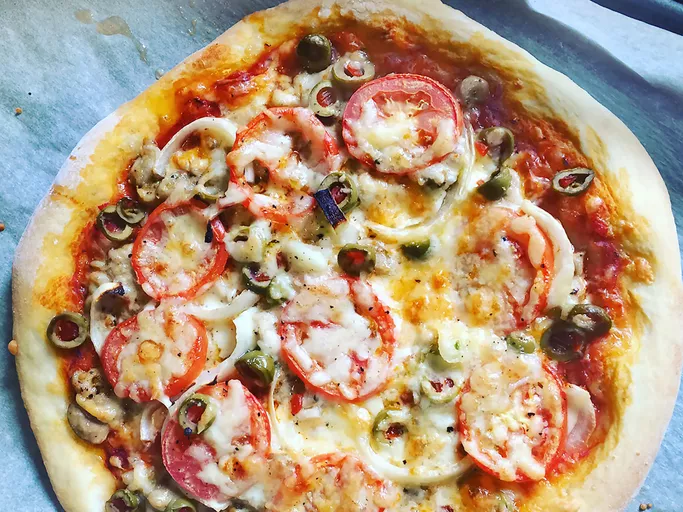

Easy Pizza Recipe

Ingredients
- Warm Water (110 degrees F/45 degress C)
- Yeast (0.25 ounce)
- White Sugar (1 teaspoon)
- Bread Flower (2 and 1/2 cups)
- Olive Oil (2 tablespoons)
- Salt (1 teasppon)
Steps
- Gather all ingredients. Preheat the oven to 450 degrees F (230 degrees C),
and lighhtly grease a pizza pan.
- Place warm water in a bowl; add yeast and sugar. Mix and let stand until creamy,
for about 10 minutes.
- Add flour, oil, and salt to the yeast mixture; beat until smooth. You can do this
by hand or use a stand mixer fitted with a dough hook to make it easier.
- Let it rest for 5 minutes.
- Turn dough out onto a lightly floured surface and pat or roll into a 12-inch circle.
- Transfer to the prepared pizza pan.
- Spread crust with sauce and toppings of your choice.
- Bake in the preheated oven until golden brown, 15 to 20 minutes. Remove from the oven
and let cool for 5 minutes before serving.